Getting Started
Prerequisites
- Have repeating, pre-scheduled meetings, as Ease Attendance uses the Meeting ID to identify Rosters. 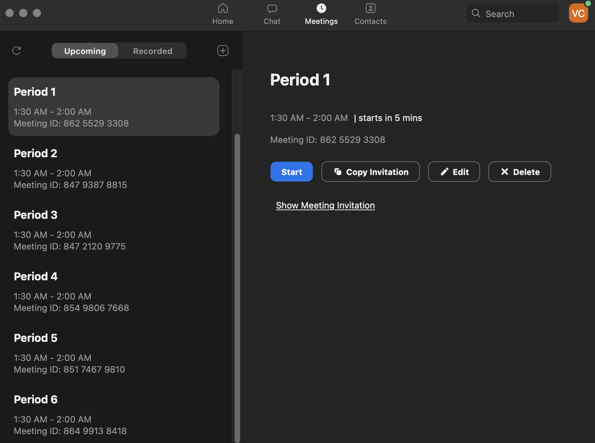
- For the best experience, have students log into classes with their full name, ex. “John Doe”. This will allow the sort by
first/last names to work most effectively. - Inform students to not change their displayed Zoom names, or Ease Attendance might miss their attendance.
Step 1 - Install Zoom App
- Click the Add to Zoom button to install the app
Step 2 - Sign Up
- After clicking the Add to Zoom button, your browser will redirect you to the Sign Up page. If it did not, click on the Sign Up button below.
- Enter in your credentials.
Note: Make sure the email you enter is the same as the email you use to sign in to Zoom
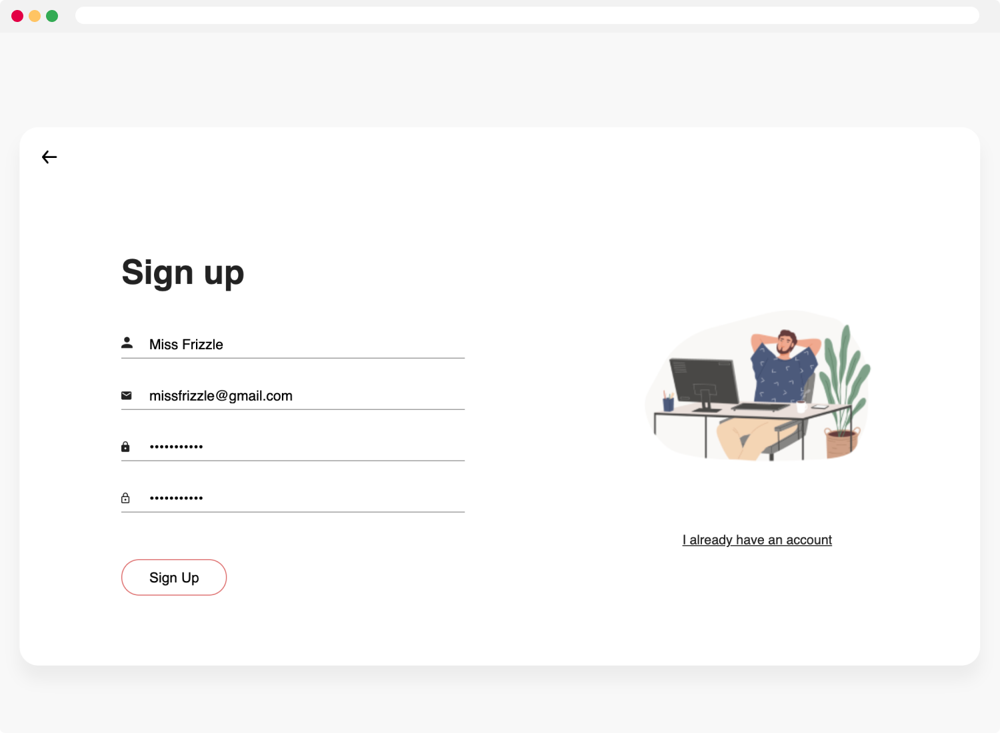
- After signing up, you will be redirected to the Ease Attendance Dashboard 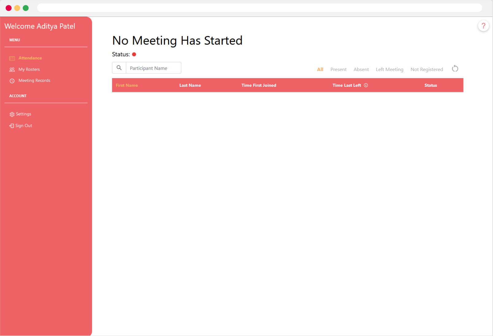
Step 3 - Add Class Roster
Automatic
- Start a Zoom Meetings and watch your meeting participants fill up the dashboard. 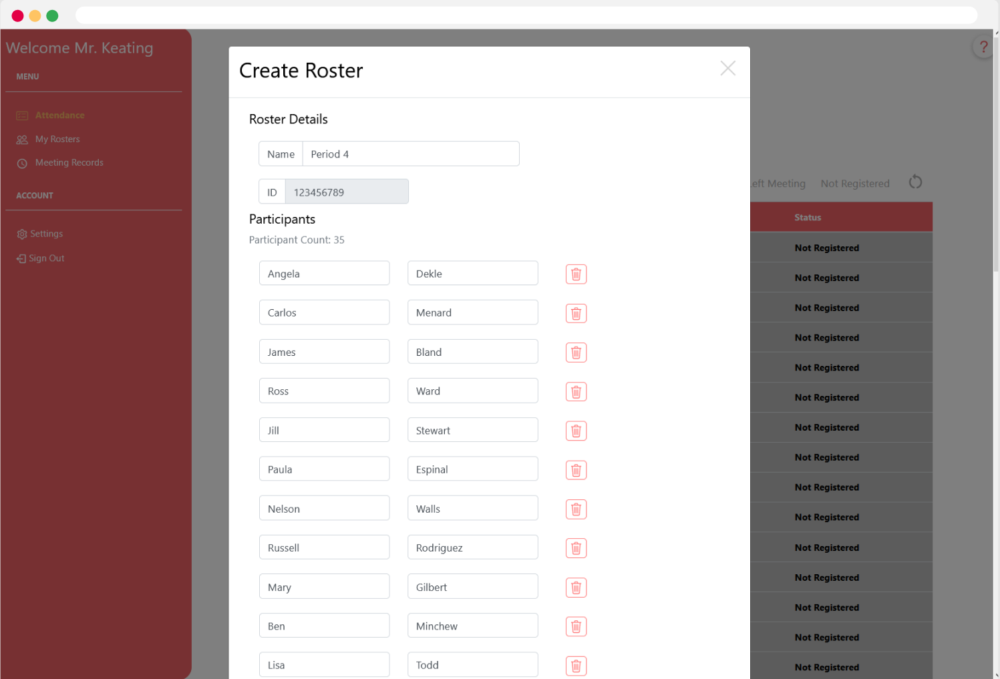
- When the participants finish coming into the Zoom meeting, click on update participants in the Ease Attendance dashboard to store them in a Meeting Roster. Confirm the meeting details and click finish.
Note: If the meeting ends, and no roster has been created, Ease Attendance will prompt you to create one.
- Go to the My Meetings tab to confirm that your meeting has been created 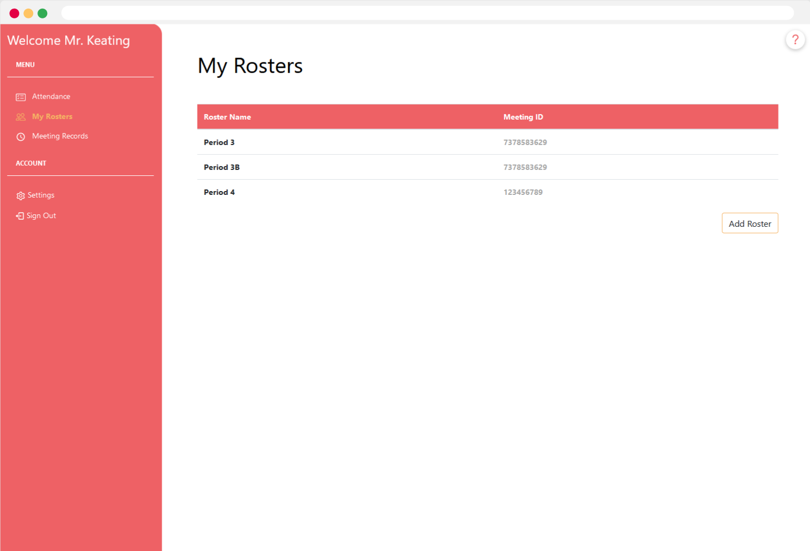
Create Multiple Rosters per Meeting ID
- If starting a Zoom Meeting which already contains a roster, Ease Attendance allows users to create a new Roster for the same Meeting ID with the Create New Roster button. 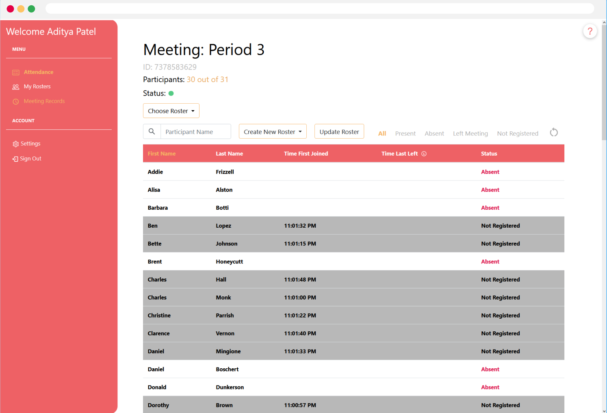
- Clicking on this allows users to choose between creating a new roster with all students absent, present, or not registered in the current roster, or to create a meeting with all unregistered students in the meeting. 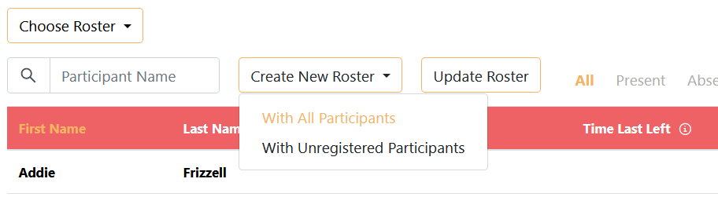
- An easy way of creating a new roster is to ask a different group of student to join the meeting, then create a new roster with these unregistered students.
Note: You must name the new Roster differently than your previous Roster
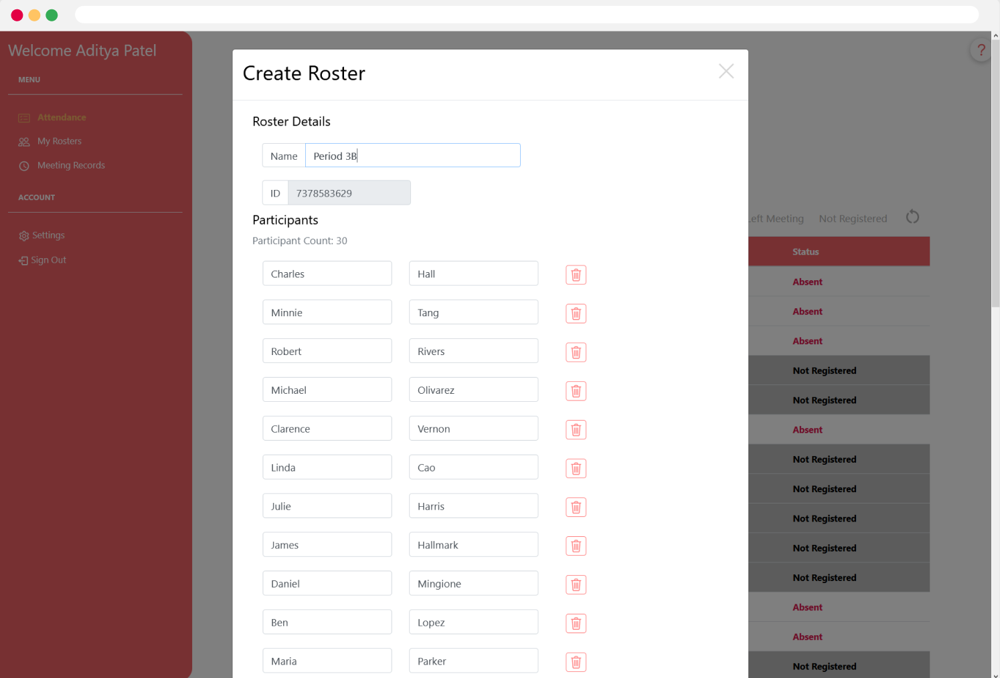
- After creating multiple rosters, users can click between them to choose which roster to display and compare for attendance. 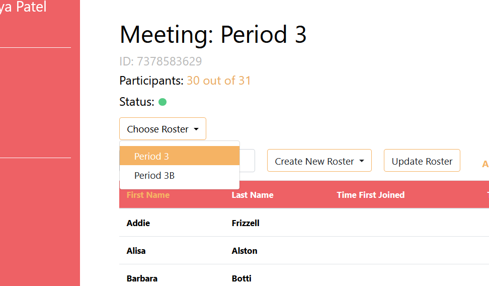
Manual
Note: This action will not create a meeting for you on Zoom but instead registers the following as a class roster on Ease Attendance
- Go to the My Meetings tab 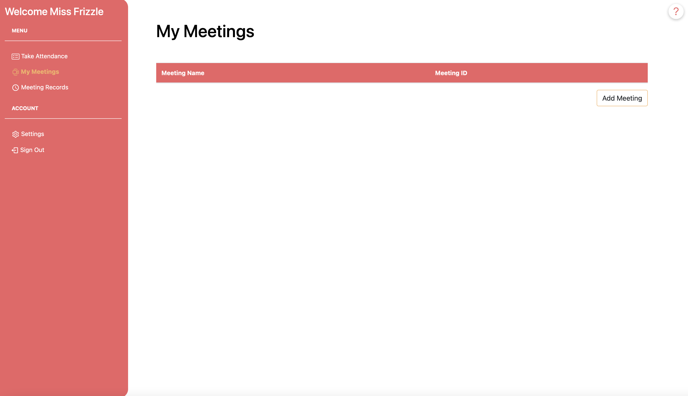
- Click on add meeting 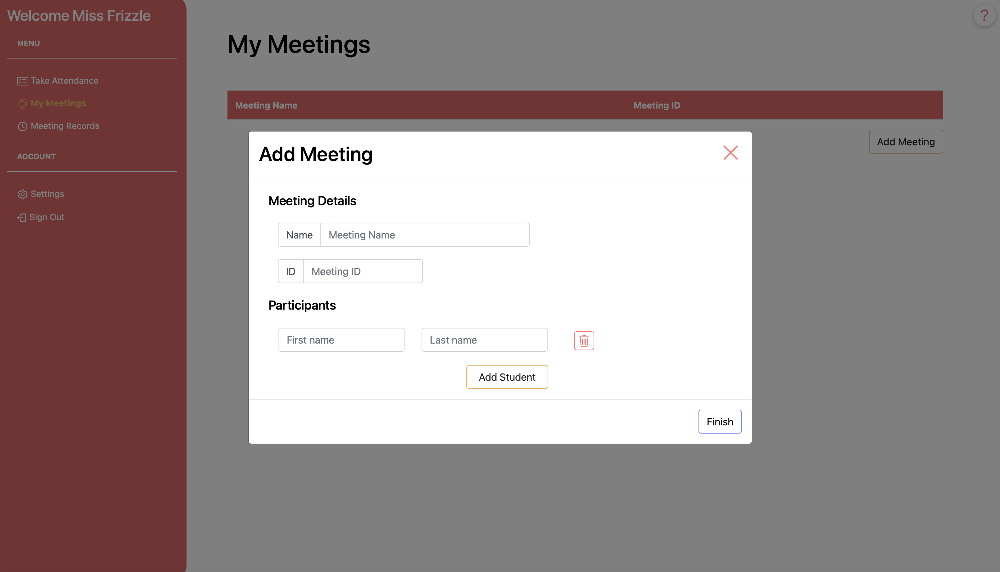
- Input your Zoom meeting details and add students to your class roster
Note: If a user creates multiple Rosters with the same Meeting ID, then both will be visible under the "Choose Roster" in the "Take Attendance" Tab
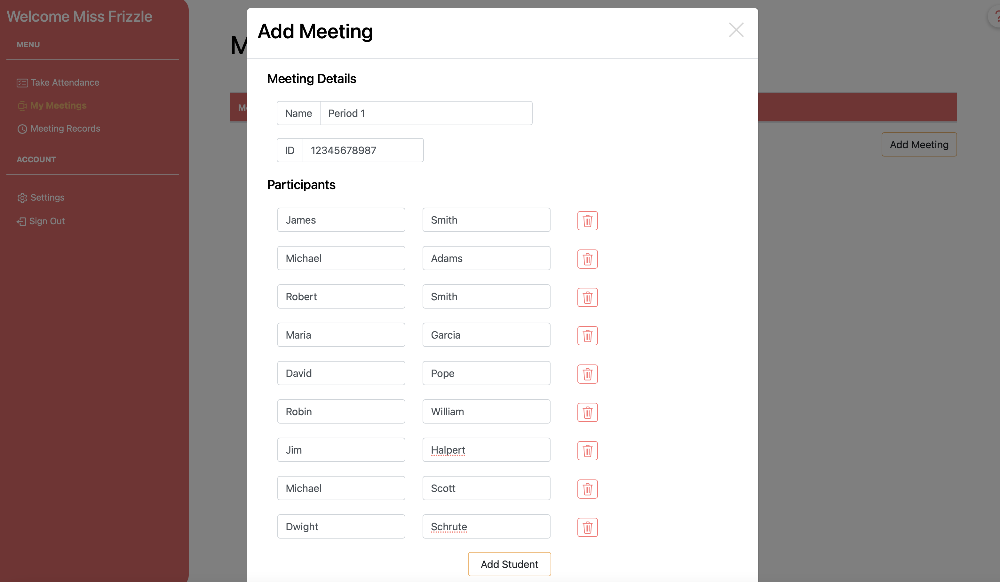
- Confirm meeting details and click finish. Now you'll be able to see your newly-created meeting.
Video Tutorial
Tools
Filter by attendance status
Sort by "Present", "Absent", "Left Meeting", or "Not Registered" by clicking on them in the Dashboard.
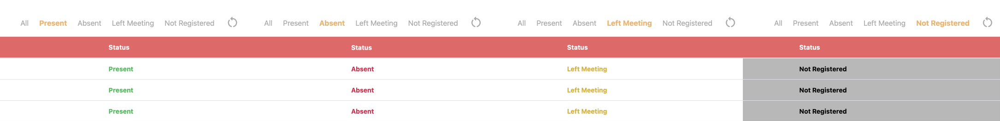Check number of Participants
Ease Attendance displays the number of people in your meeting out of the number of people who are in your class roster.
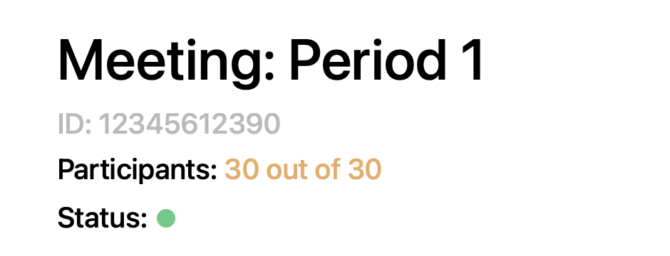Participant Search
Search for specific participants by entering their names in the Participant Search during a Meeting.
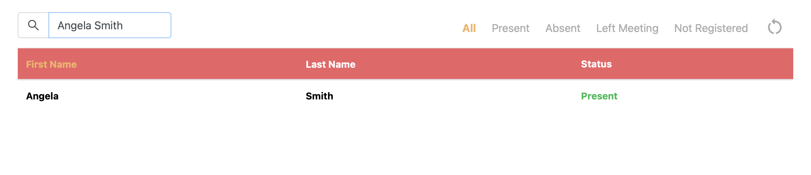Sort Participants
Sort participants by first, last name, or time joined/left by clicking on the "First Name" or "Last Name" buttons.
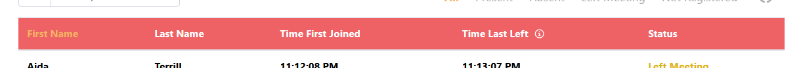Refresh
Refreshing your meeting can fix some temporary issues or update participants quicker.

Meeting Records
All Meeting Records are stored in the Ease Attendance Dashboard under the "Meeting Records" tab.
Users can easily see when participants joined, left, and when the meeting started or ended, even after the meeting ends.
The search feature allows searching for when specific users joined/left your Zoom Meeting.
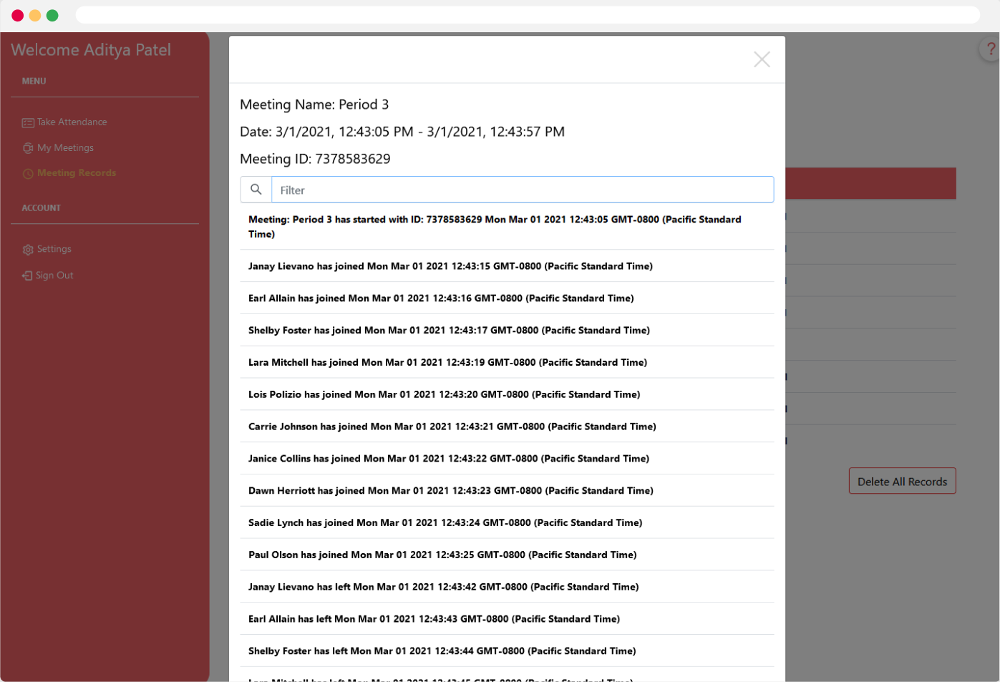Definitions
Attendance Statuses
- Present - The Participant is currently in your Zoom meeting.
- Absent - The Participant had never joined your Zoom meeting.
- Left Meeting - The Participant had previously joined your Zoom Meeting and then left it.
- Not Registered - This Participant does not show up on your Meeting's Class Roster.
My Meetings
- Meetings are stored in your Ease Attendance account under the "My Meetings" tab
- Under "My Meetings", users can create, delete and modify Meetings and their rosters.
- These Meetings are used to compare with a list of Meeting Participants to see who's present, absent, ect.
Meeting Records
- All Meeting Records are stored in the Ease Attendance Dashboard under the "Meeting Records" tab.
- Users can easily see when participants joined, left, and when the meeting started or ended.
Update Participants
- If you have unregistered participants in your Meeting and wish to add them to your class roster, just click on the
"Update Participants" on the "Take Attendance" tab of the Dashboard - A popup will show all the old Class Roster combined with all unregistered participants.
- Clicking "Finish" will save the Class Roster with the new participants
Time Joined/Left
- Whenever a participant first joins the meeting, the time is recorded and stored for the particular meeting. A user can sort between these by clicking on "Time First Joined" in the table.
- Similarly, every time a participant leaves the meeting, the time is recorded and updated on the table, under "Time Last Left"(which can also be sorted). Note that the "Time Last Left" includes the time that participants leave the main room to go to Zoom breakout rooms.
Uninstalling
Step 1 - Login in to Zoom Marketplace
- Go to the Zoom Marketplace and login 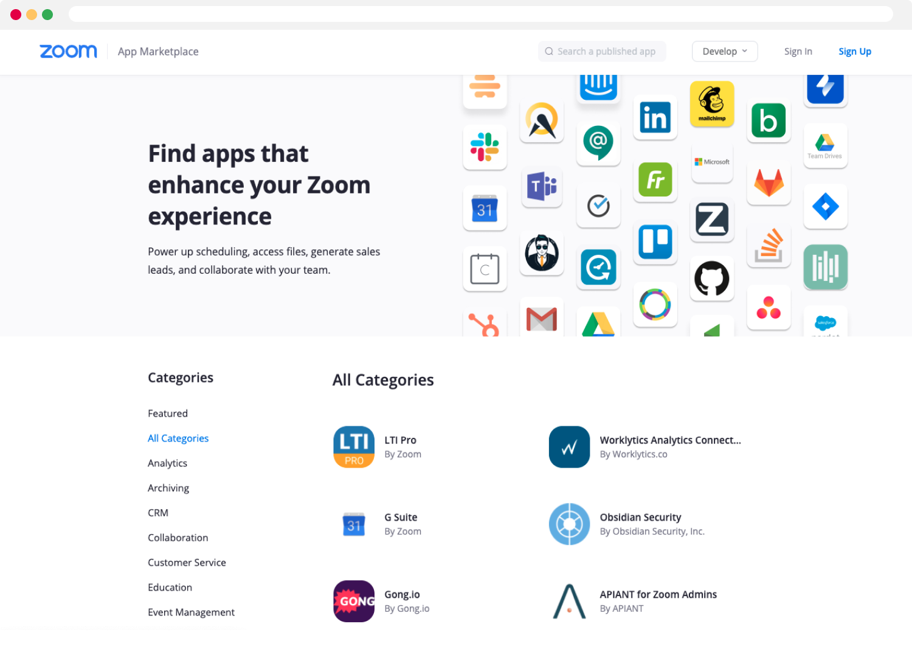
Step 2 - Locate App
- Click on Manage > Installed Apps and locate Ease Attendance 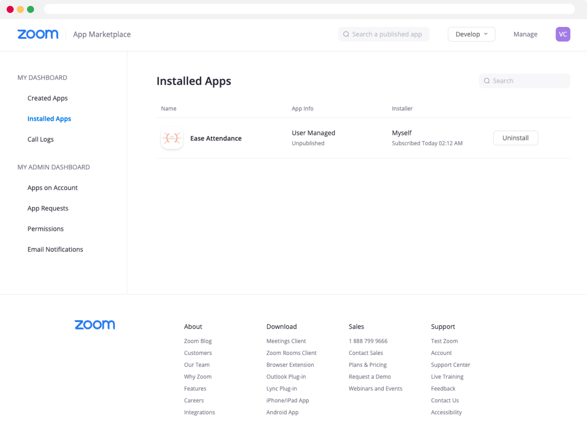
Step 3 - Uninstall
- Click on uninstall
Note: All account data stored on Ease Attendance will be deleted automatically
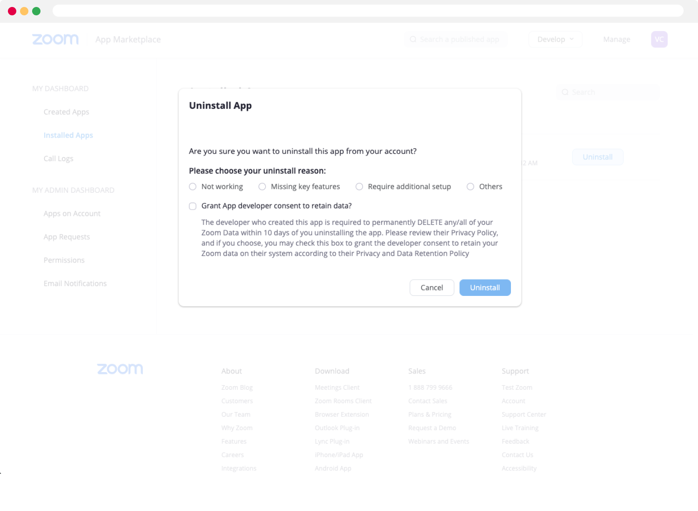